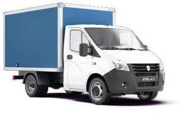

Самые популярные услуги по вывозу мусора в Истре
Услуги, которые выбирают наши клиенты наиболее часто

Контейнер
6900
4490 рублей
Подходит для центра города и во дворах, где не проедет грузовой автомобиль. Используется для вывоза строительного и бытового мусора при ремонте квартир или небольших торговых помещений и при переездах.

Газель
6900
4490 рублей
Контейнеры емкостью 8-12 м³ используются при ремонте квартир, домов, вывозе старой мебели или замене окон. Обычно при ремонте квартиры будет достаточно 1-2 контейнера.
Грузчики
6900
4490 рублей
Контейнеры емкостью 8-12 м³ используются при ремонте квартир, домов, вывозе старой мебели или замене окон. Обычно при ремонте квартиры будет достаточно 1-2 контейнера.